4-bit ALU – Designed from Scratch on Intel DE10-Lite
The Flex: A 4-bit ALU Built from Zero
This entire ALU was designed from scratch – starting with basic logic gates, then building multiplexers, then a full adder, then a 1-bit ALU, and finally a 4-bit ALU. Every component was simulated, verified, and then deployed to physical hardware.
Building blocks (bottom → up):
Mux2 (2:1 multiplexer) → selects ADD vs SUB
↓
Mux4 (4:1 multiplexer) → selects operation (AND/XOR/ADD/SUB)
↓
Full Adder → binary addition with carry in/out
↓
1-bit ALU → processes 1 bit + carry chain
↓
4-bit ALU → 4 parallel 1-bit ALUs with carry chain
↓
Pin assignment → to DE10-Lite board's 7-segment displays
Component Schematics – Building the ALU from Gates
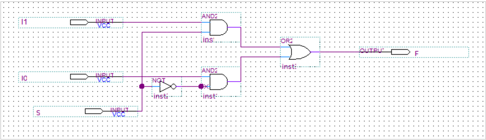
A 2-to-1 multiplexer selects between ADD and SUBTRACT operations. When selector=0, the adder receives B directly (ADD). When selector=1, it receives inverted B (SUBTRACT via two's complement).
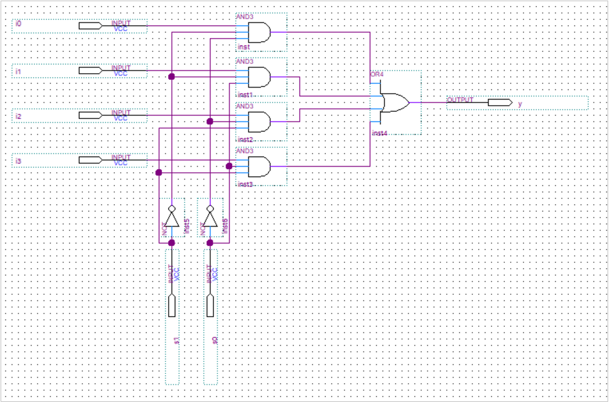
A 4-to-1 multiplexer selects which operation the ALU performs: 00=AND, 01=XOR, 10=ADD, 11=SUBTRACT. This is the "operation selector" for the ALU.
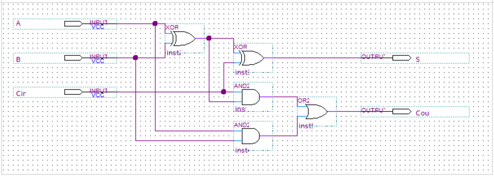
The fundamental calculation unit. Takes A, B, and Carry-In, produces Sum and Carry-Out. Multiple full adders are chained together to add multi-bit numbers.
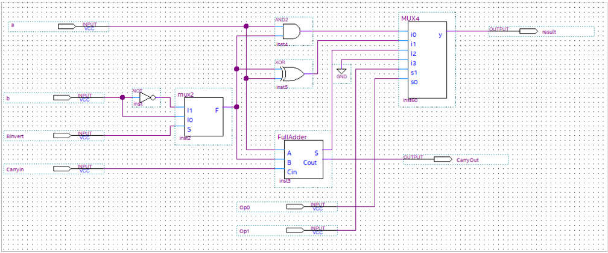
A complete 1-bit processor. Contains AND gate, XOR gate, full adder, and both multiplexers. Can perform any of the four operations on a single bit.
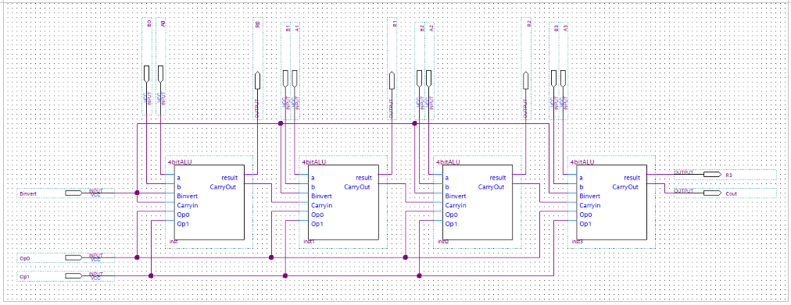
Four 1-bit ALUs connected in parallel with a ripple-carry chain. The Carry-Out from each bit feeds into the next bit's Carry-In, enabling multi-bit arithmetic.
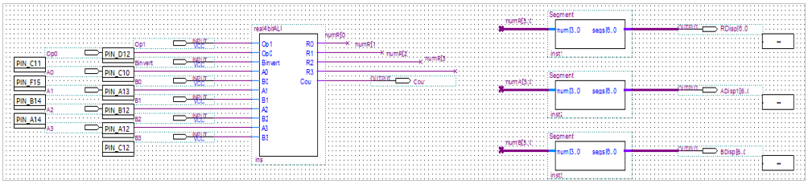
The final ALU mapped to the DE10-Lite board's physical pins. Inputs come from switches, outputs drive the 7-segment displays.
Simulation Waveforms – Multiplexer Verification
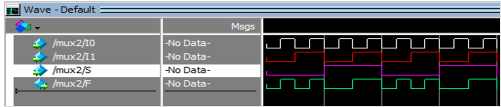
When selector=0, output mirrors Input 0. When selector=1, output mirrors Input 1. Verified all four input combinations.
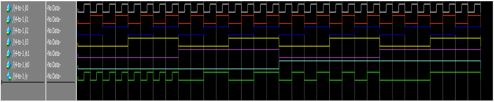
Output mirrors the selected input based on the two selector bits (00=Input0, 01=Input1, 10=Input2, 11=Input3). Verified all 16 combinations.
Simulation Waveforms – 1-bit ALU Functions
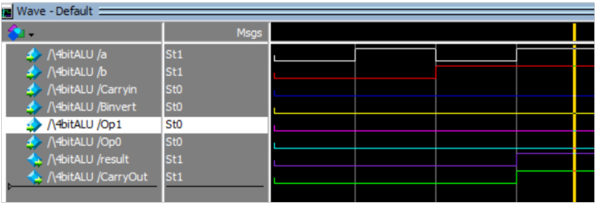
Output = 1 only when both A=1 AND B=1. Otherwise output = 0. Verified all four input combinations.
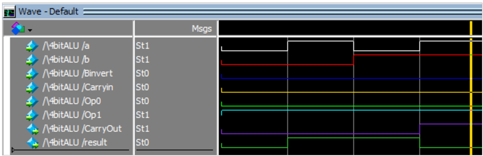
Output = 1 when A ≠ B (0,1 or 1,0). Output = 0 when A = B (0,0 or 1,1). Exclusive OR is the "difference detector".
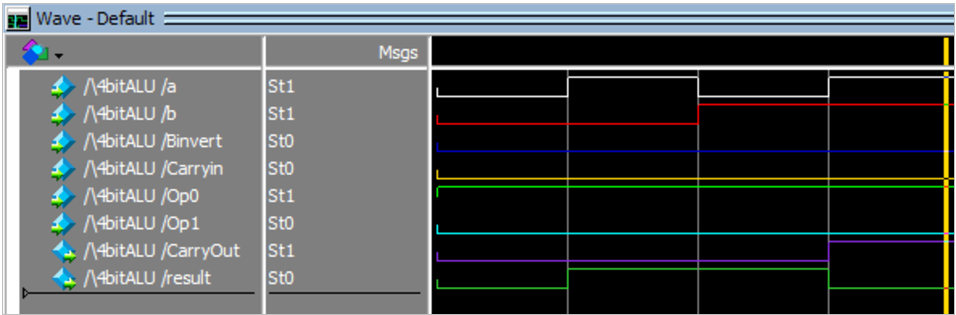
Binary addition: 1+0=1 (Sum=1, Carry=0), 1+1=0 (Sum=0, Carry=1). The yellow line shows the Carry-Out to the next bit.
Simulation Waveforms – 4-bit ALU Functions
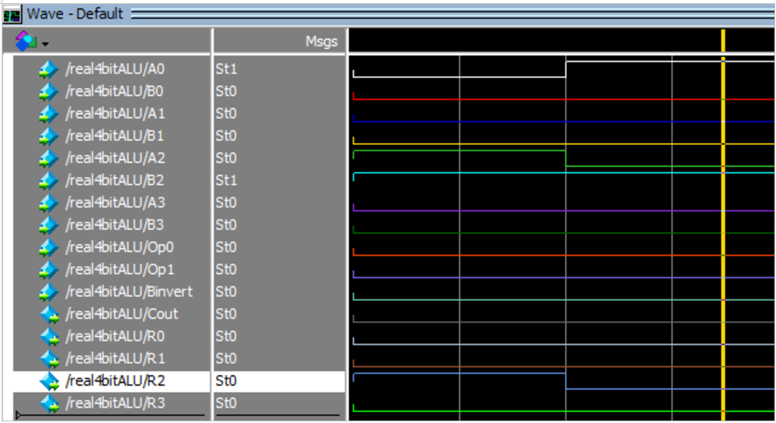
Bitwise AND operation. Left: 0100 (4) AND 0100 (4) = 0100 (4). Right: 0001 (1) AND 0100 (4) = 0000 (0).
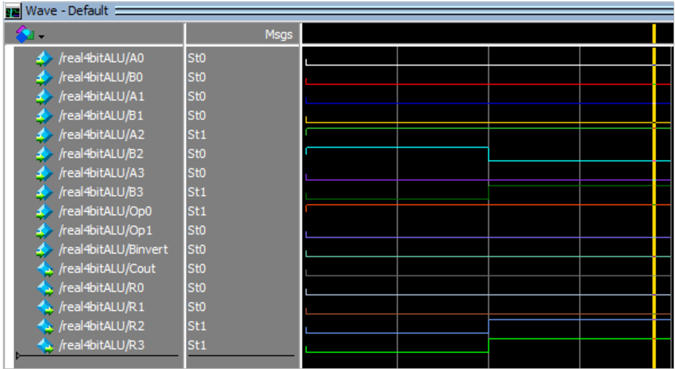
Binary addition across 4 bits. Left: 0100 (4) + 0100 (4) = 1000 (8). Right: 0100 (4) + 1100 (12) = 0000 with carry-out (16 in decimal).
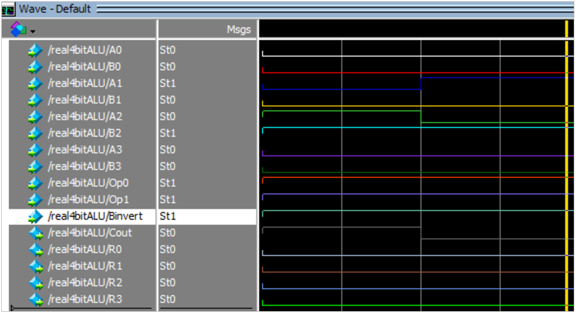
Subtraction using two's complement. Left: 0100 (4) - 0100 (4) = 0000 (0). Right: 0010 (2) - 0100 (4) = 1110 (14, representing -2 in two's complement).
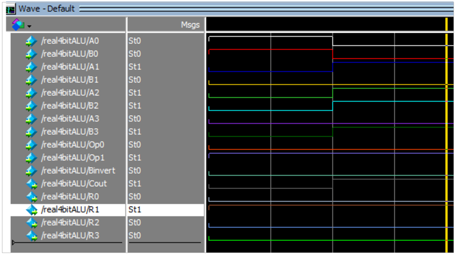
Bitwise XOR operation. Left: 0001 (1) XOR 0001 (1) = 0000 (0). Right: 0110 (6) XOR 1110 (14) = 1000 (8).
Register File – CPU Memory Operations
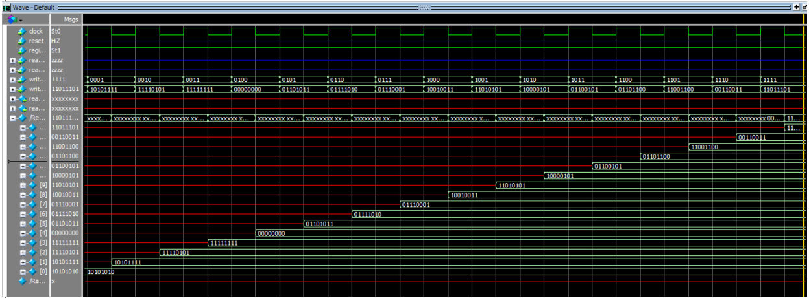
Demonstrates writing data to registers. Only one register can be written at a time. The register holds the data value after the write enable signal goes low.
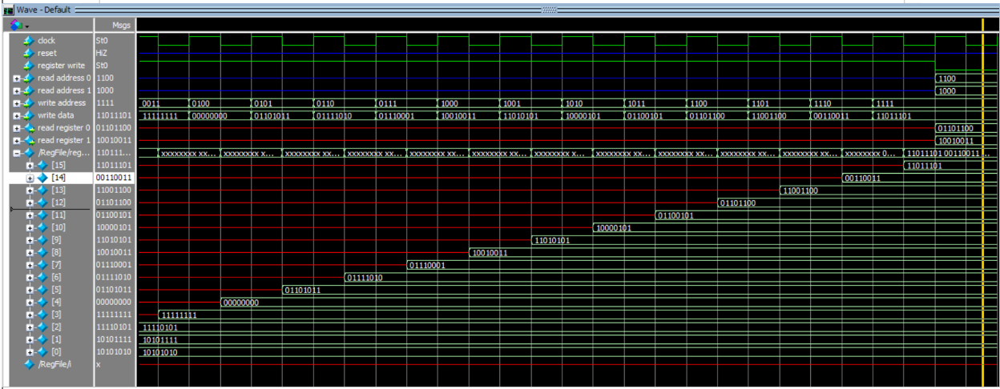
Two registers can be read simultaneously – shown by outputs 1100 (register 12) and 1000 (register 8). This dual-read capability is essential for CPU instruction execution.
Physical Deployment – DE10-Lite Board

The completed 4-bit ALU deployed to physical hardware. Inputs are set using the board's switches, outputs are displayed on the 7-segment displays.

Full demonstration video showing the ALU performing AND, XOR, ADD, and SUBTRACT operations on the DE10-Lite board. Contact me for access.
Skills Demonstrated
Resources
🔗 GitHub: github.com/PixelHD543
🔗 Full Report: Available on request – contact me for the complete academic report
🔗 Portfolio Homepage: Back to main portfolio